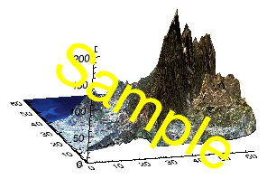

The Rotate method rotates a graphic item. 
s = SURFACE(/TEST, /CURRENT)
s.Rotate, /RESET
s.Rotate, 45, /ZAXIS
s.Rotate, -60, /XAXIS
s.Rotate, 45, /YAXIS
t = TEXT(0.5, 0.3, 'Sample', $
FONT_SIZE=100, ALIGNMENT=0.5, $
COLOR='yellow')
t.Rotate, -30
graphic .Rotate, Angle [, /DEFAULT] [, /RESET] [, /XAXIS] [, /YAXIS] [, /ZAXIS]
The number of degrees to rotate the graphic. Positive values represent clockwise rotation as if looking along the positive axis. Angle is required unless DEFAULT or RESET is set.
Set this keyword to 1 to change to the default rotation for 3D graphics (30° in X, 30° in Y, then -90° in X). This keyword is ignored for 2D graphics.
Set this keyword to 1 to reset the rotation before applying any inputs.
Set this keyword to 1 to rotate the graphic around the X axis.
Set this keyword to 1 to rotate the graphic around the Y axis.
Set this keyword to 1 to rotate the graphic around the Z axis. This is the default.
|
8.0 |
Introduced |